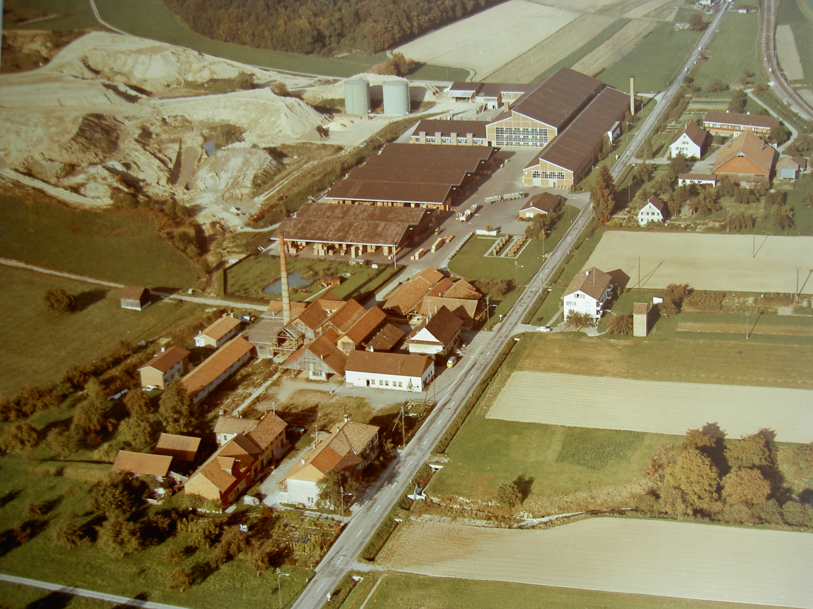
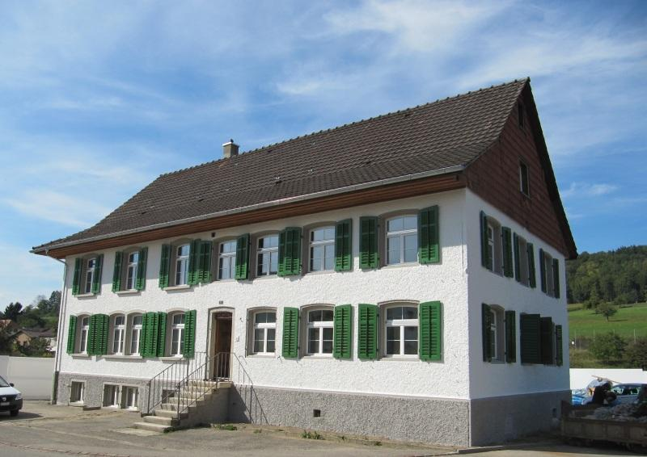

Die Liegenschaft hat früher zur Ziegelei gehört. Hier standen bis vor kurzem noch die Kantine, Wohngebäude und das Direktionsgebäude. Früher befand sich auch noch ein Ofen auf dem Grundstück, wie folgende Luftaufnahme aus den 70er Jahren zeigt.


Das Direktionsgebäude – auch in der Luftaufnahme gut erkennbar – wurde 2011 umfassend erneuert. Die alte Kantine und die verlassenen Wohnbaracken wurden entfernt, um für die neuen Wohnungen Platz zu schaffen.

